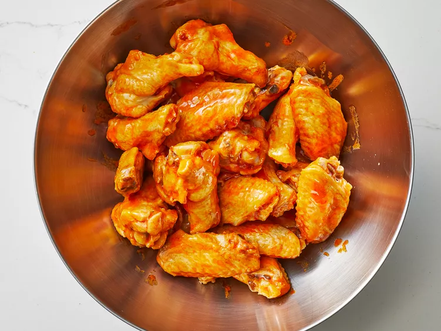

Buffalo Wings

Description
What's more American than buffalo wings? That's right nothing! We make the classic wings for whatever the occasion
Ingredients:
- ⅔ cup hot pepper sauce (such as Frank's RedHot)
- ½ cup cold unsalted butter
- 1 ½ tablespoons white vinegar
- ¼ teaspoon Worcestershire sauce
- ¼ teaspoon cayenne pepper
- ⅛ teaspoon garlic powder
- salt to taste
Steps:
- Gather all ingredients
- Combine hot sauce, butter, vinegar, Worcestershire sauce, cayenne, garlic powder, and salt in a pot over medium heat. Bring to a simmer while stirring with a whisk.
- As soon as the liquid begins to bubble on the sides of the pot, remove from heat, stir with the whisk, and set aside for use.
- Enjoy!